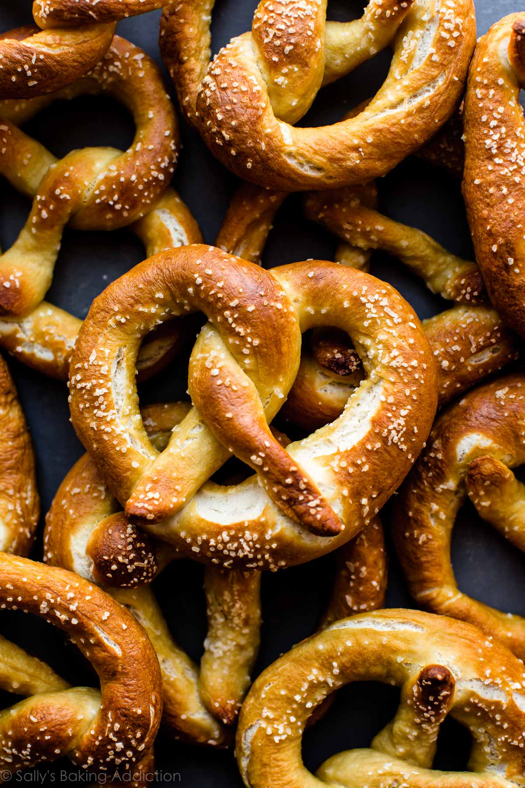

Recipes
Pretzels

Description
Homemade soft pretzels are nothing new around
here because this recipe has been a reader
favorite for years. The dough requires just
6 ingredients and there’s hardly any rise time,
so not only are these easy, they’re pretty
quick too. In fact, I remember feeling pleasantly
surprised at the ease and speed the first time I
made them—it took us only 30 minutes to make 1 batch!
Over the years, I’ve added a smidge of melted butter
to the dough for improved flavor. Furthermore,
we’ve introduced the baking soda bath. While it
sounds strange, this step is what gives pretzels
that iconic flavor, chewy texture, helps deepen
their golden color in the oven, and locks in the
super soft interior. If you get the water boiling
ahead of time, it really only adds 5 minutes to the
entire process. We do it every time now. It’s worth it!
Ingredients
- 1 and 1/2 cups warm water
- 2 and 1/4 tsp instant or active dry yeast
- 1 tsp salt
- 1 Tbsp brown sugar
- 1 Tbsp unsalted butter, melted
- 3 and 3/4 cups all-purpose flour
- Coarse salt for sprinkling
- Baking soda bath
- 1/2 cup baking soda
- 9 cups water
Steps
-
Whisk yeast into warm water and let sit for 1 minute.
Whisk in salt, sugar, and melted butter. Slowly add 3 cups
of flour, 1 cup at a time. Mix with a wooden spoon until
dough is thick. Add 3/4 cup more flour until dough is no
longer sticky. If dough is still sticky, add 1/4-1/2 cup more,
as needed.
-
Knead the dough for 5 minutes. If the dough becomes too sticky,
sprinkle some flour on the work surface. Poke the dough with a
finger--if it slowly bounces back, it is ready to rise.
-
Shape the kneaded dough into a ball and cover with a towel. Let
rest for 10 minutes.
-
Preaheat oven to 400°F and bring baking soda and 9 cups water
to a boil. Line 2 baking sheets with parchment paper
or silicone baking mats. If using parchment paper, lightly spray
with non-stick spray or grease with butter.
-
With a sharp knife or pizza cutter, cut dough into 1/3-cup sections.
-
Roll the dough sections into 20-22 inch ropes. Twist into pretzel shape.
-
Drop 1-2 pretzels into the baking soda bath for 20-30 seconds.
Using a slotted spatula, lift the pretzels out and allow excess
water to drip off. Place pretzel onto prepared baking sheet.
Sprinkle the top with coarse sea salt. Repeat with remaining
pretzels.
-
Bake for 12-15 minutes or until golden brown.
-
Remove from the oven and serve warm.
Source
https://sallysbakingaddiction.com/easy-homemade-soft-pretzels/